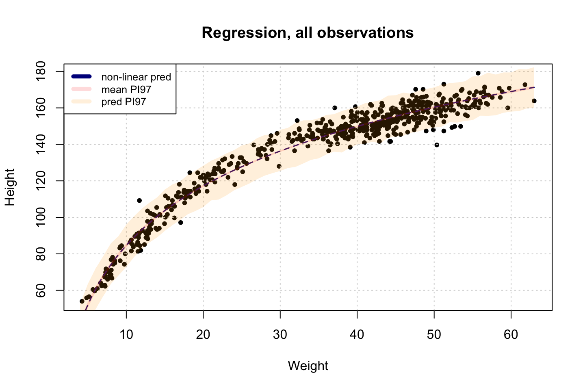

4 Geocentric Models
This chapter introduce lienar regression as a Bayesian procedure. Thus we will apply probability measures for intepretation, as that is what Bayesian is.
4.1 Why Normal distributions are normal
This section examplifies why normal distributions are normal and how it is often seen in nature. Jesper shows an example where binomial random draws will tend to be centered around 0 as there are the most paths leading towards the middle. That is why we often find the normal distribution in real life.
It express that normal distributions come from addition of random events, e.g., the result of consecutive coin tosses. Also the product of small numbers approximate addition, hence the result of such outcomes is similar to the added scenario.
Although with large numbers we will tend not to get a normal distribution by finding the product hereof.
The book aim to teaach a strategy to model data and not a single model just for the toolbox.
4.2 A language for describing models
This chapter summarize how models are defined and defines mathematical terminalogy.
Recipe of defining models
Recognize the variables that you want to understand. Observable variables = data. While unobservable things = parameters, e.g., averages and rates, e.g., you dont observe GDP growth rates, but it can be deducted from assessing varaibles (observed data).
Each variable can be defined in terms of other variables or in terms of a probability distribution. This enables one to learn about associations between variables.
The combination of variables and their probability distributions defines a joint generative model. This can be used to simulate hypothetical observations as well as analyze real ones.
Mathematical terminology:
We see that \(W \sim Binomial(N,p)\) means that W (water) variable is binomial, it has two outcomes, yes or no. and then we have \(p ~ Uniform(0,1)\), means that p (proportion of water on the globe) is between 0 and 1.
Notice that the wavy symbol ~ means that the models are stochastic, i.e., there are no instances on the left that are known with certainty. I.e., W is distributed as binomial
Regarding priors:
The priors must be set before you see the data, as if you did not do that, then it is no more a prior.
If you have no idea what to set as a prior, then you set it to some random value, e.g., making it uniform to be within a specific range.
4.3 Gaussian model of height
The following is an example to understand normal distributions of normal distributions.
data(Howell1)
d <- Howell1 #d for data frame
str(d)## 'data.frame': 544 obs. of 4 variables:
## $ height: num 152 140 137 157 145 ...
## $ weight: num 47.8 36.5 31.9 53 41.3 ...
## $ age : num 63 63 65 41 51 35 32 27 19 54 ...
## $ male : int 1 0 0 1 0 1 0 1 0 1 ...We see that we have height, wiehgt, age and male.
This can also be summarized with mean, sd, percentiles and histograms.
precis(d)
|
|
|
|
|
And thus we see the distributions. We are only going to be working with people above or equal to 18 years of age.
Notice that we cannot use the histograms to suggest a distribution, that is because we need to select the priors on berforehand.
The precis function also shows the compatibility intervals (recall the probability intervals)
d2 <- d[d$age >= 18,]4.3.1 The model
Now we can define the model with with the following terms:
\[h_i \sim Normal(\mu,\sigma)\]
\(h_i \sim \mathcal{N}\), this is exactly the same, just shortened.
Meaning that height is stochastic, given the wavy character ~, it is normal with mu and sigma mean and standard deviation. The i means each element in vector h.
Now we can specify the priors. this is done independently for each parameter (unobserved). It looks the following:

We see that we have the likelihood that consist of the priors, which are specified afterwards. This can be plotted with.
It means that the mean is centered in 178 and 20 standard deviation, thus two standard deviations (95% being 40), we will have 95% of the people within 178 +- 40.
curve(dnorm(x,178,20),from = 100,to = 250,main = 'Mean prior')
curve(dunif(x,0,50),from = -10,to = 60,main = "Sigma prior")
Now one can sample heights based on the two priors.
samples <- 10000
sample_mu <- rnorm(samples,178,20) #notice we cannot take the mean of the data, as it is a prior!!!
sample_sigma <- runif(samples,0,50)
prior_h <- rnorm(samples,sample_mu,sample_sigma)
dens(prior_h)One see that the mean is around the 178. The more samples we draw, the more normal will it look.
Now this makes sense since the mean standard deviation is rather low, lets look at an example with a large standard deviation to the mean.
samples <- 10000
sample_mu <- rnorm(samples,178,100) #notice we cannot take the mean of the data, as it is a prior!!!
prior_h <- rnorm(samples,sample_mu,sample_sigma)
dens(prior_h)
Now we see that the height can go all the way up to 600 and down to a negative number.
When you have a lot of data instances, then such a prior is not harmfull even though it clearly expects a lot of people being very tall and some even below 0. So having an unreasonable prior is not necessarily bad.
4.3.2 Grid approximation of the posterior distribution
Notice that in practice we dont really do this, as it is computationally heavy. Although it is shown for explanatory reasons.
mu.list <- seq(from=150, to=160, length.out=100)
sigma.list <- seq(from=7, to=9, length.out=100)
#Expand list, mu and sigma,
post <- expand.grid(mu = mu.list, sigma = sigma.list)
post$LL <- sapply(1:nrow(post), function(i) sum(
dnorm(x = d2$height
,mean = post$mu[i]
,sd = post$sigma[i]
,log = TRUE)
)
)
post$prod <- post$LL + dnorm( post$mu , 178 , 20 , TRUE) +
dunif(post$sigma,0, 50, TRUE)
post$prob <- exp(post$prod - max(post$prod))Now, lets inspect the posterior distribution
par(mfrow = c(2,1))
#A contour plot
contour_xyz(post$mu, post$sigma, post$prob)
#A heatmap
image_xyz(x = post$mu,y = post$sigma,z = post$prob)
What we get from this, is the most probable combinations of the mu and sigma. Hence we see that very often the mean will be between 154 and 155 while the standard deviation is between 7.5 and 8.
4.3.3 Sampling from the posterior
Now we are going to sample from the posterior, just as in the globe tossing problem. Here we are just also to sample from the mean and standard deviation. This is done by first making a set of samples, where each row number is listed, basically just an index.
Then we use the index to return the given mean and standard deviation.
sample.rows <- sample(1:nrow(post),size = 10000, replace = TRUE) #We can draw the same instance twice
sample.mu <- post$mu[sample.rows]
sample.sigma <- post$sigma[sample.rows]We see that post$mu and sigma is a grid ranging from respectively 150 to 160 and 7 to 9. e.g.,
m <- matrix(post$mu,nrow = 100,ncol = 100)
head(m[1:10,1:10],n = 10)## [,1] [,2] [,3] [,4] [,5] [,6] [,7] [,8]
## [1,] 150.0000 150.0000 150.0000 150.0000 150.0000 150.0000 150.0000 150.0000
## [2,] 150.1010 150.1010 150.1010 150.1010 150.1010 150.1010 150.1010 150.1010
## [3,] 150.2020 150.2020 150.2020 150.2020 150.2020 150.2020 150.2020 150.2020
## [4,] 150.3030 150.3030 150.3030 150.3030 150.3030 150.3030 150.3030 150.3030
## [5,] 150.4040 150.4040 150.4040 150.4040 150.4040 150.4040 150.4040 150.4040
## [6,] 150.5051 150.5051 150.5051 150.5051 150.5051 150.5051 150.5051 150.5051
## [7,] 150.6061 150.6061 150.6061 150.6061 150.6061 150.6061 150.6061 150.6061
## [8,] 150.7071 150.7071 150.7071 150.7071 150.7071 150.7071 150.7071 150.7071
## [9,] 150.8081 150.8081 150.8081 150.8081 150.8081 150.8081 150.8081 150.8081
## [10,] 150.9091 150.9091 150.9091 150.9091 150.9091 150.9091 150.9091 150.9091
## [,9] [,10]
## [1,] 150.0000 150.0000
## [2,] 150.1010 150.1010
## [3,] 150.2020 150.2020
## [4,] 150.3030 150.3030
## [5,] 150.4040 150.4040
## [6,] 150.5051 150.5051
## [7,] 150.6061 150.6061
## [8,] 150.7071 150.7071
## [9,] 150.8081 150.8081
## [10,] 150.9091 150.9091Now lets plot the samples.
par(mfrow = c(1,1))
plot(sample.mu,sample.sigma
,cex = 0.5,pch = 16 #Dot sizes and shape
,col = col.alpha(rangi2,0.1) #make transparant colors
)
Now we can inspect the priors.
par(mfrow = c(2,1))
dens(sample.mu)
dens(sample.sigma)These should have been more or less normally distributed according to the book, but for some reason they are not.
4.3.4 Finding the posterior distribution with quap
This is using quadratic approximation.
data("Howell1")
d <- Howell1
d2 <- d[d$age >= 18,]We can spcify the model with the following:
\[h_i \sim Normal(\mu,\sigma)\] \[\mu \sim Normal(178,20)\] \[\sigma \sim Uniform(0,150)\]
While the equivilent in code is:
height ~ dnorm(mu,sigma)
mu ~ dnorm(178,10)
sigma ~ dunif(0,50)This can be placed in a list:
flist <- alist(
height ~ dnorm(mu,sigma)
,mu ~ dnorm(178,10)
,sigma ~ dunif(0,50)
)Now we can fit the model to the data:
m4.1 <- quap(flist,data = d2)
precis(m4.1)
|
|
|
|
4.3.5 Sampling from a quap
Now we are going to sample from the quadratic approximation.
Covariances is key to quadratic approximation. This can be found with:
vcov(m4.1)## mu sigma
## mu 0.1695354471 0.0008701619
## sigma 0.0008701619 0.0849109920This tells us how each parameter (unobserved) relates to every other parameter in the posterior distribution. In this scenario covariance does not matter a lot, but when we have a predictor variable, it will be key.
This can be extended to 2 elements:
- A vector of variances for the parameters
- A correlation matrix that tells us how changes in any parameter lead to correlated changes in others.
diag(vcov(m4.1))
cov2cor(vcov(m4.1))## mu sigma
## 0.16953545 0.08491099
## mu sigma
## mu 1.000000000 0.007252502
## sigma 0.007252502 1.000000000We see that a change of 1 in mu will lead to a change of 1 in mu, and it will lead to a change of 0.0018 in sigma. This is very small, hence we can see that there is no correlation between the two of these. Thus, learning the mean will not tell anything about the standard deviation.
Getting samples
post <- extract.samples(m4.1,n = 10000)
head(post)| mu | sigma |
|---|---|
| 154.2506 | 7.260139 |
| 155.2653 | 7.831658 |
| 155.2295 | 8.015096 |
| 155.4242 | 7.819525 |
| 154.6868 | 8.088762 |
| 154.5212 | 8.095557 |
precis(post)
|
|
|
|
|
We can see that distributions look more or less normal.
plot(post,pch = 20
,col = col.alpha(rangi2,0.1))4.4 Linear prediction
The procedure that we end up going through:
1. Use link to generate distributions of posterior value for mu.
2. Use summary functions like mean or PI to find averages and lower and upper bounds of mu, for each value of the predictor variable.
3. Finally, use plotting functions like lines and shade to draw the lines and intervels. Or you might plot the distributions of the predictions, or do even something else.
Now we are going to regress one variable on another, hence we have a predictor and an outcome variable. The following example is predicting height given the weight.
plot(d2$height ~ d2$weight)
There is clearly a relationship.
4.4.1 The lienar mdoel strategy
To specify this model we will say:
let x = weight, thus \(\bar{x}\) is the average weight parameter of the observed variable.
Now we see that heights are stochastic and normally distributed and is described by the mean and standard deviation. To predict height, we need the mean of the weight variable. This one is deterministic hence the = and not the ~ sign. It consists of the priors (assumptions), where we express \(\alpha\), \(\beta\) and \(\sigma\). These are all stochastic, where \(\alpha\) and \(\beta\) are normally distributed while \(\sigma\) is uniform.
Now one can simulate the priors.
set.seed(2971)
N <- 100
a <- rnorm(N,178,20) #notice we cannot take the mean of the data, as it is a prior!!!
b <- rnorm(N,0,10)This returns 100 pairs of \(\alpha\) and \(\beta\). This can be plotted with:
plot(NULL
,xlim=range(d2$weight), ylim=c(-100,400)
,xlab="weight", ylab="height" )
abline(h=0, lty=2)
abline(h=272, lty=1, lwd=0.5)
mtext("b ~ dnorm(0,10)")
xbar <- mean(d2$weight)
for (i in 1:N ) curve(a[i] + b[i]*(x - xbar)
,from=min(d2$weight), to=max(d2$weight)
,add=TRUE
,col=col.alpha("black",0.2))
We see that that we get many predictions where we expect a person to be higher than the worlds largest and smaller than the worlds smallest. We can address with by taking the logarithm, which is done in the following:
Hence we see that log is added to the equation.
b <- rlnorm(10000,0,1)
dens(b,xlim = c(0,5),adj=0.1)Doing the prior predictive simulation again, to compare with the logarithm of beta.
par(mfrow = c(1,2))
set.seed(2971)
N <- 100
a <- rnorm(N,178,20)
b <- rnorm(N,0,10)
plot(NULL,xlim=range(d2$weight), ylim=c(-100,400),xlab="weight", ylab="height" )
abline(h=0, lty=2)
abline(h=272, lty=1, lwd=0.5)
mtext("b ~ dnorm(0,10)")
xbar <- mean(d2$weight)
for (i in 1:N ) curve(a[i] + b[i]*(x - xbar),from=min(d2$weight), to=max(d2$weight),add=TRUE,col=col.alpha("black",0.2))
#With beta logarithm
set.seed(2971)
N <- 100 # 100 lines
a <- rnorm(N, 178, 20)
b <- rlnorm(N, 0, 1) #RLNORM for logarithm
plot(NULL ,xlim=range(d2$weight), ylim=c(-100,400),xlab="weight", ylab="height")
abline(h=0, lty=2)
abline(h=272, lty=1, lwd=0.5)
mtext("b ~ dnorm(0,10)")
xbar <- mean(d2$weight)
for (i in 1:N ) curve(a[i] + b[i]*(x - xbar),from=min(d2$weight), to=max(d2$weight),add=TRUE,col=col.alpha("black",0.2))
(#fig:4.41)Left = Initial model, Right = logarithm of beta
Now we see that the joint prior for \(\alpha\) and \(\beta\) are realistict.
Joint prior = The predicted height given the wiehgt, which rely on alpha and beta priors that we have made.
Then, what is the correct prior? It is a fallacy that there is one unique value that is optimal for the prior. Thus one must reason for the selection of the prior and perhaps try different priors to see what it suggest. Essentially the prior is just information that you give the model and can e.g., work as a constrain, as we see in the example above where the priors initially returned extreme values, which we need to tamper down.
Then one could say that we should compare the predictions with the actual sample and then optimize against this. Although one must be weary, as this will just yield to fitting against the sample, and is likely not to be the correct model. Although it boiles down to the purpose of the model.
4.4.2 Finding the posterior distribution
We see that we have the following model specification:

Notice that = is exchanged with <-, that is by convention and must be used when specifying the model in R.
data("Howell1")
d <- Howell1
d2 <- d[d$age >= 18,]
xbar <- mean(d2$weight)
#Fit the model
m4.3 <- quap(
alist(
height ~ dnorm(mu,sigma)
,mu <- a + b * (weight - xbar) #Notice each weight is subtracted by the mean, the closer to the mean the smaller effect of b
,a ~ dnorm(178,20)
,b ~ dlnorm(0,1)
,sigma ~ dunif(0,50)
)
,data = d2
)4.4.3 Interpreting the posterior distribution
One can interpret the posterior distribution in two ways:
- By assessing tables of information
- Plotting the posterior distributions
It is often easiest to deduct conclusions based on the plots. The following make examples of both the tables and the plots.
4.4.3.1 Tables fo marginal distributions
Marginal posterior distribution of the parameters:
precis(m4.3
,prob = 0.89 #PI for 89% percent, also default
)
|
|
|
|
For example we see that the mean height increase by a factor of 0.9 if one person is 1 kg heavier, hence the heavier, the taller.
The 5.5% and 94.5% indicate that 89% percent of the time one gets between 84cm and 97 cm taller if one is 1kg heavier.
One can also assess the covariances:
round(vcov(m4.3),3)## a b sigma
## a 0.073 0.000 0.000
## b 0.000 0.002 0.000
## sigma 0.000 0.000 0.037And we see that there is very little covariance among the parameters.
This is a visual representation of the same.
rethinking::pairs(m4.3)4.4.3.2 Plotting posterior inference against the data
First the raw data is plotted:
par(mfrow = c(1,1))
plot(height ~ weight,data = d2,col = rangi2)
post <- extract.samples(m4.3)
a_map <- mean(post$a)
b_map <- mean(post$b)
curve(expr = a_map + b_map * (x - xbar),add = TRUE) #Ability to plot a function
We see that the function we defined based on the posterior seem reasonable, although there are many plausible lines.
Hence we are going to look into dealing with uncertainty.
4.4.3.3 Adding uncertainty around the mean
We are going to make many of the lines to interprete where they end up, hence also reflecting uncertainty.
post <- extract.samples(m4.3) #Default = 10.000
post[1:5,]| a | b | sigma |
|---|---|---|
| 154.5789 | 0.9376825 | 5.220756 |
| 154.4067 | 0.8937310 | 4.752735 |
| 154.4622 | 0.9150822 | 5.341227 |
| 154.2649 | 0.9236067 | 5.160423 |
| 155.1258 | 0.9495934 | 5.108891 |
We see that these are basically all different functions that can be plotted to show the uncertainty.
N <- 150 #No. of samples
dN <- d2[1:N,] #subsetting
#Approximating the the
mN <- quap(
alist(
height ~ dnorm( mu , sigma )
,mu <- a + b*( weight - mean(weight) )
,a ~ dnorm( 178 , 20 )
,b ~ dlnorm( 0 , 1 )
,sigma ~ dunif( 0 , 50 )
)
,data=dN
)The following will show one example where we loop of the data data fit the line.
n <- 20 #No of loops
# extract n samples from the posterior distribution
post <- extract.samples(mN ,n=n)
# display raw data and sample size
plot(x = dN$weight
,y = dN$height
,xlim=range(d2$weight),ylim=range(d2$height)
,col=rangi2
,xlab="weight",ylab="height")
mtext(concat("N = ",N,", Iterations = ",n))
# plot the lines, with transparency
for ( i in 1:n)
#Draw a and b values from the subset of the data
curve(post$a[i] + post$b[i]*(x-mean(dN$weight))
,col=col.alpha("black",0.3)
,add=TRUE)
One will see that the more observations we include, the more certain will the model become. One will often experience that we are more confident around the mean and less in the ends of the x-range.
In other words, the less data we introduce, the less we rely on the priors that we specified before seeing the data. that is because the prior is updated according to the data.
Notice that confidence is not equal to correctness that is due to the data that we have may not reflect a truer perspective than the priors.
4.4.3.4 Plotting regression intervlas and contours
Now lets start an example where the weight is fixed to 50 kg. We will see that a person with 50kg is not fixed to one height, but some will have greater certainty.
We see that we get 10.000 samples, thus 10.000 priors for both a and b and thus we can simulate the expected height for such a given person.
post <- extract.samples(m4.3,n = 10000)
mu_at_50 <- post$a + post$b * (50-xbar)
dens(x = mu_at_50,col = rangi2,lwd = 2,xlab = "mu|weight=50")
Now what we want to do is the same, but for all weights. For this one can use the link function.
mu <- link(m4.3,n = 1000) #1000 is also default
str(mu)## num [1:1000, 1:352] 158 157 157 157 157 ...We see that 352 roes in the data hence we get a matrix 352 columns (one for each individual) with 1.000 rows.
# define sequence of weights to compute predictions for these values will be on the horizontal axis
weight.seq <- seq(from=25, to=70, by=1)
# use link to compute mu for each sample from posterior and for each weight in weight.seq
mu <- link( m4.3 , data=data.frame(weight=weight.seq) )
str(mu)## num [1:1000, 1:46] 136 136 136 137 137 ...Now we see that since we fed 46 values for the weight, we get 46 columns instead of one pr invidual.
plot(height ~ weight,data = d2,type="n") #use type="n" to hide raw data
# loop over samples and plot each mu value
for (i in 1:100)
points(weight.seq, mu[i,] ,pch=16, col=col.alpha(rangi2,0.1))
Finally we will summarize the distribution for each weight value.
# summarize the distribution of mu
mu.mean <- apply(mu, 2, mean) #46 values, one for each weight
mu.PI <- apply(mu, 2, PI, prob=0.89) #The 89% PI for each meanmu.mean = the average height (mu) for each weight value. And the PI is just accompanied with this as well.
Now we plot the means and the PI ontop of the data.
#Raw data plot
plot(height ~ weight, data = d2, col = col.alpha(rangi2,0.5))
#Ploatting MAP line (mean mu for each weight)
lines(x = weight.seq,y = mu.mean)
#Plotting PI intervals for each weight
shade(mu.PI,weight.seq)NOTICE THAT THIS IS PREDICTION OF AVERAGE HEIGHTS, IN THE FOLLOWING WE MAKE INTERVALS FOR ACTUAL HEIGHTS
4.4.3.5 Prediction intevals
Now we are going to predict actual heights.
Also notice that up until now, we have not had to simulate sigma, as it is only relevant for predicting actual heights, and as we saw that mean heights are dependent (deterministic) on alpha and beta prior, but not on sigma.
This comes down to, what is sigma, it is an expression of the scatter of the points.
The following is an example of actual predictions and generating a band of percentile interval.
#Simulate height (Simulates posterior observations for map and map2stan model fits.)
sim.height <- sim(m4.3, data=list(weight=weight.seq)) #n = 1000
str(sim.height)## num [1:1000, 1:46] 136 131 140 139 136 ...This contains simulated heights and not distributions as we saw previously.
Now we can generate the PI that we are going to plot.
height.PI <- apply(sim.height,2,PI,prob = 0.89)
height.HPDI67 <- apply(sim.height,2,HPDI,prob = 0.67)
height.HPDI89 <- apply(sim.height,2,HPDI,prob = 0.89)
height.HPDI97 <- apply(sim.height,2,HPDI,prob = 0.97)Lastly we need to plot the predictions and the percentile interval.
#Plotting the data points
plot(height ~ weight,data = d2,col = col.alpha(rangi2,0.5))
#Draw MAP line
lines(weight.seq,y = mu.mean)
#Draw HPDI region for simulated heights, notice I added two additional regions
shade(height.HPDI67,weight.seq)
shade(height.HPDI89,weight.seq)
shade(height.HPDI97,weight.seq)
Now we see that the region is far wider.
4.5 Curves form lines
This is technically the same, but we add complexity in the form of more predictors. We approach this with polynomial regression and splines.
4.5.1 Polynomial regression
This is basically using the same variable, but transforming it into second or third order polynomials.
When doing polynomials you are at risk of generating very large numbers, hence one should standardize the variable to avoid this. This also means that interpreting the effects from each parameter is more difficult.
Now we can specify the model with the following:
Notice that this is for a cubic polynomial regression. One can just disregard $/beta_3$ in a quadratic polynomial.
The following will plot the example of:
#Standardize weights
d$weight_s <- ( d$weight - mean(d$weight) )/sd(d$weight)
#Add vector of squared values, for the polynomial variable
d$weight_s2 <- d$weight_s^2
d$weight_s3 <- d$weight_s^3 #For the cubic model
#Specfify models
#Linear model
m4.4 <- quap(
alist(
height ~ dnorm( mu , sigma ) ,
mu <- a + b1*weight_s ,
a ~ dnorm( 178 , 20 ) ,
b1 ~ dlnorm( 0 , 1 ) ,
sigma ~ dunif( 0 , 50 )
)
,data = d
)
#Quadratic model (4.65)
m4.5 <- quap(
alist(
height ~ dnorm( mu , sigma ) ,
mu <- a + b1*weight_s + b2*weight_s2 ,
a ~ dnorm( 178 , 20 ) ,
b1 ~ dlnorm( 0 , 1 ) ,
b2 ~ dnorm( 0 , 1 ) ,
sigma ~ dunif( 0 , 50 )
)
,data = d
)
#Cubic model (4.69)
d$weight_s3 <- d$weight_s^3
m4.6 <- quap(
alist(
height ~ dnorm( mu , sigma ) ,
mu <- a + b1*weight_s + b2*weight_s2 + b3*weight_s3 ,
a ~ dnorm( 178 , 20 ) ,
b1 ~ dlnorm( 0 , 1 ) ,
b2 ~ dnorm( 0 , 10 ) ,
b3 ~ dnorm( 0 , 10 ) ,
sigma ~ dunif( 0 , 50 )
)
,data=d
)
#Plotting
par(mfrow = c(1,3))
#Linear
weight.seq <- seq( from=-2.2 , to=2 , length.out=30 )
pred_dat <- list( weight_s=weight.seq ) #adds degree of poly
mu <- link( m4.4 , data=pred_dat ) #need to change model
mu.mean <- apply( mu , 2 , mean )
mu.PI <- apply( mu , 2 , PI , prob=0.89 )
sim.height <- sim( m4.4 , data=pred_dat ) #need to change model
height.PI <- apply( sim.height , 2 , PI , prob=0.89 )
plot( height ~ weight_s , d , col=col.alpha(rangi2,0.5),pch = 20)
lines( weight.seq , mu.mean )
shade( mu.PI , weight.seq )
shade( height.PI , weight.seq )
#Quadratic
weight.seq <- seq( from=-2.2 , to=2 , length.out=30 )
pred_dat <- list( weight_s=weight.seq , weight_s2=weight.seq^2 ) #adds degree of poly
mu <- link( m4.5 , data=pred_dat ) #need to change model
mu.mean <- apply( mu , 2 , mean )
mu.PI <- apply( mu , 2 , PI , prob=0.89 )
sim.height <- sim( m4.5 , data=pred_dat ) #need to change model
height.PI <- apply( sim.height , 2 , PI , prob=0.89 )
plot( height ~ weight_s , d , col=col.alpha(rangi2,0.5),pch = 20)
lines( weight.seq , mu.mean )
shade( mu.PI , weight.seq )
shade( height.PI , weight.seq )
#cubic
weight.seq <- seq( from=-2.2 , to=2 , length.out=30 )
pred_dat <- list( weight_s=weight.seq , weight_s2=weight.seq^2, weight_s3=weight.seq^3 ) #adds degree of poly
mu <- link( m4.6 , data=pred_dat ) #need to change model
mu.mean <- apply( mu , 2 , mean )
mu.PI <- apply( mu , 2 , PI , prob=0.89 )
sim.height <- sim( m4.6 , data=pred_dat ) #need to change model
height.PI <- apply( sim.height , 2 , PI , prob=0.89 )
plot( height ~ weight_s , d , col=col.alpha(rangi2,0.5),pch = 20)
lines( weight.seq , mu.mean )
shade( mu.PI , weight.seq )
shade( height.PI , weight.seq )Figure 4.1: Comparison between a linear, quadratic and cubic model. Notice that the same variable is used, just with different degree of polynomials.
Table output for the polynomial
precis(m4.5)
|
|
|
|
Now we see that b2 for instance is more complicated, as it is squared values that the parameter is multiplied with. Notice that a is still the intercept with y.
Also since the same variable is in the model more than once, one cannot interpret one without the other.
Arguments for why polynomials are bad:
- If you have regions with no data, the model can do all kinds of weird things
- Makes absurd predictions outside range of data
- It is likely to get some obscure shapes
- The model is difficult to interpret as you cannot interpret one parameter without the other,as the polynomial variable is tied to the non polynomial variable.
- Often having a polynomial makes no sense in real life, even though you may find a relationship
- In a quadratic model, the fitted lines will always go up and then down, hence it needs to fit the data in that way. The same applies to cubic functions.
- Actually not very flexible and cannot have monotone shape
The spline that we see in the following is the answer to many of these difficulties.
4.5.2 Splines
This is an alternative way of adding curvature. We are going to use basis splines, i.e., B-splines. This is also called P-splines, this is for penalty-splines, as the priors adds a penalty.
The code is not exemplified yet. Do this. For now, see ??
It is basically just splines as we have seen earlier in ML.
It is often a much better model and polynomial regression.
During the lecture he shows a really nice representation of which of the basis functions that are active.
4.6 Exercises
4.6.1 4M1
For the model definition below, simulate observed y values from the prior (not the posterior).
\[y_i \sim Normal(\mu,\sigma)\]
\[\mu \sim Normal(0,10)\]
\[\sigma \sim Exponential(1)\]
set.seed(1337)
N <- 10000
mu <- rnorm(n = N,0,10) #notice we cannot take the mean of the data, as it is a prior!!!
sigma <- rexp(10000,1)
prior_h <- rnorm(N,mu,sigma)
dens(prior_h)Note, in this example dnorm and rnorm is exactly the same
Plotting the priors
What we see here, is that the exponential prior keep more information than the
{curve(dexp(x,1),from = 0,to = 7
,xlab = "sigma",ylab = "Density"
,ylim = c(0,1))
curve(dunif(x,0,1),add = T,col = "red") #dunif = cut at 1 where all the mass is below.
mtext("Priors")}
4.6.2 4M8
In the chapter, we used 15 knots with the cherry blossom spline.
1. Increase the number of knots and observe what happens to the resulting spline. 1. Then adjust also the width of the prior on the weights 1. change the standard deviation of the prior and watch what happens. 1. What do you think the combination of knot number and the prior on the weights controls?
#Creating a function for the exercise, so you dont have to run it all again to make modifications
load_execute <- function(
N_knots
,model_spec = alist(
T ~ dnorm(mu,sigma)
,mu <- a + B %*% w
,a ~ dnorm(6,10)
,w ~ dnorm(0,1)
,sigma ~ dexp(1)
)
)
{
library(rethinking)
#Load data
data(cherry_blossoms)
d <- cherry_blossoms
d <- d[complete.cases(d$temp),] # complete cases on temp
#precis(d) #For inspections
#Defining spline specifications
num_knots <- N_knots
knot_list <- quantile(x = d$year #Data
,probs = seq(0,1,length.out=num_knots) #probabilities
)
knot_list <- knot_list[-c(1,num_knots)] #Remove knot at 0 and 1
#Defining the splines
library(splines)
B <- bs(
x = d$year
,knots = knot_list
,degree = 3 #cubic splines
,intercept = TRUE
)
#Define model
m <<- quap(
model_spec
,data = list(T = d$temp,B = B)
,start = list(w = rep(0,ncol(B)))
)
#precis(m,depth = 2)
}From this we can see all the parameters at the knots, although this does not provide much information anymore before plotting.
We see the effect of each spline.
Now we can plot the actual fitted lines and the compatibility interval.
par(mfrow = c(3,1))
data(cherry_blossoms)
d <- cherry_blossoms
d <- d[complete.cases(d$temp),] # complete cases on temp
for (i in seq(10,30,10)){
load_execute(N_knots = i)
mu <- link(m)
mu_PI <- apply(X = mu,MARGIN = 2,FUN = PI,0.97) #0.97 is input to PI
#Adding raw data
plot(d$year,d$temp
,col = col.alpha(rangi2,0.3)
,pch = 16
,xlab = "Year"
,ylab = "Temp"
,main = paste("No. of knots:",i,sep = " ")
)
#Adding shade for the intervals
shade(object = mu_PI
,lim = d$year
,col = col.alpha("black",0.5)
)
}We are able to see that the larger amount of knots the more wigglyness do we allow for the model to have. Naturally there are no rule of thumb for an optimal number of knots, that is sensitive to the case.
4.6.3 4H1
The weights listed below were recorded in the !Kung census, but heights were not recorded for these individuals. Provide predicted heights and 89% intervals for each of these individuals. That is, fill in the table below, using model-based predictions.
First we define the model to get the parameters, such as mean for beta. Recall that a = the intercept with y.
library(rethinking)
data(Howell1)
d <- Howell1
d2 <- d[d$age>=18,]
xbar <- mean(d2$weight)
m <- quap(
alist(
height ~ dnorm( mu , sigma ),
mu <- a + b * (weight - xbar) + sigma,
a ~ dnorm( 178 , 20 ),
b ~ dlnorm( 0 , 1 ),
sigma ~ dunif( 0 , 50 )
),
data=d2
)
precis(m) #similar to summary()
|
|
|
|
From this we are able to extract samples:
post <- extract.samples(m)
str(post)## 'data.frame': 10000 obs. of 3 variables:
## $ a : num 150 149 150 149 149 ...
## $ b : num 0.907 0.951 0.938 0.903 0.787 ...
## $ sigma: num 4.84 4.93 4.61 5.28 5.38 ...
## - attr(*, "source")= chr "quap posterior: 10000 samples from m"Function to get n samples based on the input weight, it returns the mean y and the compatability interval
f <- function( weight ) {
y <- rnorm(n = 10000 , post$a + post$b * (weight - xbar) , post$sigma )
return( c( mean(y) , PI(y,prob=0.89) ) )
}
weight_list <- c(46.95,43.72,64.78,32.59,54.63)
result <- sapply( weight_list , f )
result## [,1] [,2] [,3] [,4] [,5]
## 151.2486 148.4566 167.3111 138.3709 158.2212
## 5% 143.0175 140.4629 159.2750 130.0935 149.9860
## 94% 159.5345 156.5157 175.4989 146.4820 166.4864setNames(object = data.frame(cbind(weight_list,t(result)))
,nm = c("Weight","Height","5%","94%"))| Weight | Height | 5% | 94% |
|---|---|---|---|
| 46.95 | 151.2486 | 143.0175 | 159.5345 |
| 43.72 | 148.4566 | 140.4629 | 156.5157 |
| 64.78 | 167.3111 | 159.2750 | 175.4989 |
| 32.59 | 138.3709 | 130.0935 | 146.4820 |
| 54.63 | 158.2212 | 149.9860 | 166.4864 |
We see that the heights has now been estimated.
Why we use the function: We need to samples to estimate the percentage intervals, thus sampling is required. One could merely also say \(\alpha + \beta * (weight - \bar{weight})\), thus find the point estimate given the different weights. Although that will not reflect the compatibility intervals.
Finding point estimates.
weight = weight_list[2]
m@coef['a'] + m@coef['b'] * (weight - xbar)## a
## 148.38544.6.4 4H2
Select out all the rows in the Howell1data with ages below 18 years of age. If you do it right, you should end up with a new data frame with 192 rows in it.
data(Howell1)
d <- Howell1[Howell1$age<18,]
dim(d)## [1] 192 4- Fit a linear regression to these data, using quap. Present and interpret the estimates. For every 10 units of increase in weight, how much taller does the model predict a child gets?
xbar <- mean(d$weight)
m <- quap(
alist(
height ~ dnorm( mu , sigma ),
mu <- a + b * (weight - xbar),
a ~ dnorm( 178 , 20 ),
b ~ dnorm( 0 , 10 ),
sigma ~ dunif( 0 , 50 )
),
data = d
)
summary(m)
|
|
|
|
We see see that for 1 increase in weight the mean is expected to increase by 2.72. While the 89% combatibiity intervals being 2.61 and 2.83, hence there is a positive effect. Thus by 10 kg, we expect someone to grow by a magnitude of 10.
- Plot the raw data, with height on the vertical axis and weight on the horizontal axis. Superimpose the MAP regression line and 89% interval for the mean. Also superimpose the 89% interval for predicted heights.
plot(x = d$weight,y = d$height,pch = 20,main = "Regression, age < 18"
,xlab = "Weight",ylab = "Height")
grid()
#Adding the model predictions
post <- extract.samples(m)
a_map <- mean(post$a)
b_map <- mean(post$b)
#Ability to plot a function
curve(expr = a_map + b_map * (x - xbar)
,add = TRUE #Add to existing plot
,col = "darkblue"
,lty = 2
)
#Weight sequence for getting intervals
weight.seq = seq(floor(min(d$weight)),ceiling(max(d$weight)),by = 1)
#Simulate height (Simulates posterior observations for map and map2stan model fits.)
sim.height <- sim(m, data=list(weight=weight.seq)) #n = 1000 - These are predictions
str(sim.height)## num [1:1000, 1:42] 69.6 68.4 72.7 64.8 74.8 ...
#mu
mu <- link(fit = m,data=list(weight=weight.seq))
mu.mean <- apply(mu,MARGIN = 2,FUN = mean) #2 = columns
mu.ci <- apply(mu,MARGIN = 2,FUN = PI,prob = 0.89)
#PI + plot
height.PI89 <- apply(sim.height,2,PI,prob = 0.89)
shade(mu.ci,weight.seq)
shade(height.PI89,weight.seq)We see that the linear model does not fit the data well enough in the outer regions.
- What aspects of the model fit concern you? Describe the kinds of assumptions you would change, if any, to improve the model. You don’t have to write any new code. Just explain what the model appears to be doing a bad job of, and what you hypothesize would be a better model.
One could try:
- Polynomial - as it appears as the relationship is not linear.
- Splines - same reason as above
4.6.5 4H3
Suppose a colleague of yours, who works on allometry, glances at the practice problems just above. Your colleague exclaims, “That’s silly. Everyone knows that it’s only the logarithm of body weight that scales with height!” Let’s take your colleague’s advice and see what happens.
- Model the relationship between height (cm) and the natural logarithm of weight (log-kg). Use the entire Howell1data frame, all 544 rows, adults and non-adults. Can you interpret the resulting estimates?
#Load data
data(Howell1)
d <- Howell1
paste0("data dimensions: ",dim(d)[1])
#Define and approximate the model
xbar <- mean(d$weight)
m <- quap(
alist(
height ~ dnorm( mu , sigma ),
mu <- a + b * (weight - xbar),
a ~ dnorm( 178 , 20 ),
b ~ dlnorm( 0 , 1 ),
sigma ~ dunif( 0 , 50 )
),
data = d
)
precis(m)## [1] "data dimensions: 544"
|
|
|
|
Same principle as earlier, we see that one grows with 1.76 for each increase in kg of weight. While the 89% plausible outcomes are 1.72 and 1.81.
- Begin with this plot: plot( height ~ weight , data=Howell1 ). Then use samples from the quadratic approximate posterior of the model in (a) to superimpose on the plot: (1) the predicted mean height as a function of weight, (2) the 97% interval for the mean, and (3) the 97% interval for predicted heights.
plot(x = d$weight,y = d$height,pch = 20,main = "Regression, all observations"
,xlab = "Weight",ylab = "Height")
grid()
#Adding the model predictions
post <- extract.samples(m)
a_map <- mean(post$a)
b_map <- mean(post$b)
#Ability to plot a function
curve(expr = a_map + b_map * (x - xbar)
,add = TRUE #Add to existing plot
,col = "darkblue"
,lty = 2
,lwd = 1.5
)
#Weight sequence for getting intervals
weight.seq = seq(floor(min(d$weight)),ceiling(max(d$weight)),by = 1)
# mean intervals
mu <- link(m,data = list(weight = weight.seq))
mu.PI <- apply(X = mu,MARGIN = 2,FUN = PI
,prob=0.97 #input for the function
)
shade(object = mu.PI,lim = weight.seq,col = col.alpha("red",0.15))
#Simulate height (Simulates posterior observations for map and map2stan model fits.)
sim.height <- sim(m, data=list(weight=weight.seq)) #n = 1000
str(sim.height)
#PI + plot intervals for the predictions
height.PI97 <- apply(sim.height,2,PI,prob = 0.97)
shade(height.PI97,weight.seq,col = col.alpha("orange",0.15))
#Adding legend
legend("topleft"
,legend = c("Linear pred","mean PI97","pred PI97")
,col = c("darkblue",col = col.alpha("red",0.15),col.alpha("orange",0.15))
,lty = 2
,lwd = 5
,cex = 0.8
)## num [1:1000, 1:60] 80.2 91.6 73.3 85.4 100.6 ...We see that the expected mean is very close to the linear prediction, while the actual predictions are expected to lie in a wider space.
4.6.5.1 The same but using log of weight
Now we take log of weight instead. Notice that the log scales is just the opposite of the
#Load data
data(Howell1)
d <- Howell1
paste0("data dimensions: ",dim(d)[1])
#Define and approximate the model
xbar <- mean(d$weight)
m <- quap(
alist(
height ~ dnorm( mu , sigma ),
mu <- a + b * (log(weight) - log(xbar)),
a ~ dnorm( 178 , 20 ),
b ~ dlnorm( 0 , 1 ),
sigma ~ dunif( 0 , 50 )
),
data = d
)
precis(m)## [1] "data dimensions: 544"
|
|
|
|
plot(x = d$weight,y = d$height,pch = 20,main = "Regression, all observations"
,xlab = "Weight",ylab = "Height")
grid()
#Adding the model predictions
post <- extract.samples(m)
a_map <- mean(post$a)
b_map <- mean(post$b)
#Ability to plot a function
curve(expr = a_map + b_map * (log(x) - log(xbar)) #ADDED LOG TO THE X VALUES AND MEAN X VALUES
,add = TRUE #Add to existing plot
,col = "darkblue"
,lty = 2
,lwd = 1.5
)
#Weight sequence for getting intervals
weight.seq = seq(floor(min(d$weight)),ceiling(max(d$weight)),by = 1)
# mean intervals
mu <- link(m,data = list(weight = weight.seq))
mu.PI <- apply(X = mu,MARGIN = 2,FUN = PI
,prob=0.97 #input for the function
)
shade(object = mu.PI,lim = weight.seq,col = col.alpha("red",0.15))
#Simulate height (Simulates posterior observations for map and map2stan model fits.)
sim.height <- sim(m, data=list(weight=weight.seq)) #n = 1000
str(sim.height)
#PI + plot intervals for the predictions
height.PI97 <- apply(sim.height,2,PI,prob = 0.97)
shade(height.PI97,weight.seq,col = col.alpha("orange",0.15))
#Adding legend
legend("topleft"
,legend = c("non-linear pred","mean PI97","pred PI97")
,col = c("darkblue",col = col.alpha("red",0.15),col.alpha("orange",0.15))
,lty = 2
,lwd = 5
,cex = 0.8
)
## num [1:1000, 1:60] 49.5 43.5 42.2 43 47.3 ...The conclusion is that the data clearly need to be mapped with a non linear funciton.
4.6.6 4H6
Simulate the prior predictive distribution for the cherry blossom spline in the chapter. Adjust the prior on the weights and observe what happens. What do you think the prior on the weights is doing?
#Load data
data(cherry_blossoms)
d <- cherry_blossoms
d <- d[complete.cases(d$temp),] # complete cases on templibrary(splines)
#Defining spline specifications
num_knots <- 15
knot_list <- quantile(x = d$year #Data
,probs = seq(0,1,length.out=num_knots) #probabilities
)
knot_list <- knot_list[-c(1,num_knots)] #Remove knot at 0 and 1
#Defining the splines - notice that m is altered in later code to represent other examples
B <- bs(
x = d$year
,knots = knot_list
,degree = 3 #cubic splines
,intercept = TRUE
)
m <- quap(
alist(
T ~ dnorm(mu,sigma)
,mu <- a + B %*% w
,a ~ dnorm(100,10)
,w ~ dnorm(0,10)
,sigma ~ dexp(1)
)
,data = list(T = d$temp,B = B)
,start = list(w = rep(0,ncol(B)))
)
### PLOTTING!
par(mar = c(4, 4, .1, .1),mfrow = c(3,1)) #adjust print window
### Top print
p <- extract.prior(m)
mu <- link(m,post = p)
plot(x = d$year,y = d$doy
,col = col.alpha(rangi2,0.3)
,pch = 16
,xlab = "year",ylab = "day in year"
,ylim = c(60,140)
,sub = "w ~ dnorm(0,10)"
)
for ( i in 1:20 ) lines( d$year , mu[i,] , lwd=1)
### Middle print
m <- quap(
alist(
T ~ dnorm(mu,sigma)
,mu <- a + B %*% w
,a ~ dnorm(100,10)
,w ~ dnorm(0,5) #This is altered
,sigma ~ dexp(1)
)
,data = list(T = d$temp,B = B)
,start = list(w = rep(0,ncol(B)))
)
p <- extract.prior(m)
mu <- link(m,post = p)
plot(x = d$year,y = d$doy
,col = col.alpha(rangi2,0.3)
,pch = 16
,xlab = "year",ylab = "day in year"
,ylim = c(60,140)
,sub = "w ~ dnorm(0,5)"
)
for ( i in 1:20 ) lines( d$year , mu[i,] , lwd=1)
### Bottum print
m <- quap(
alist(
T ~ dnorm(mu,sigma)
,mu <- a + B %*% w
,a ~ dnorm(100,10)
,w ~ dnorm(0,1) #This is altered
,sigma ~ dexp(1)
)
,data = list(T = d$temp,B = B)
,start = list(w = rep(0,ncol(B)))
)
p <- extract.prior(m)
mu <- link(m,post = p)
plot(x = d$year,y = d$doy
,col = col.alpha(rangi2,0.3)
,pch = 16
,xlab = "year",ylab = "day in year"
,ylim = c(60,140)
,sub = "w ~ dnorm(0,1)"
)
for ( i in 1:20 ) lines( d$year , mu[i,] , lwd=1)
We see that the smaller we define the width of w, the less wiggly will the lines be. Hence we add more penalty to the movements, i.e., so we generalize more and fit less to the data.